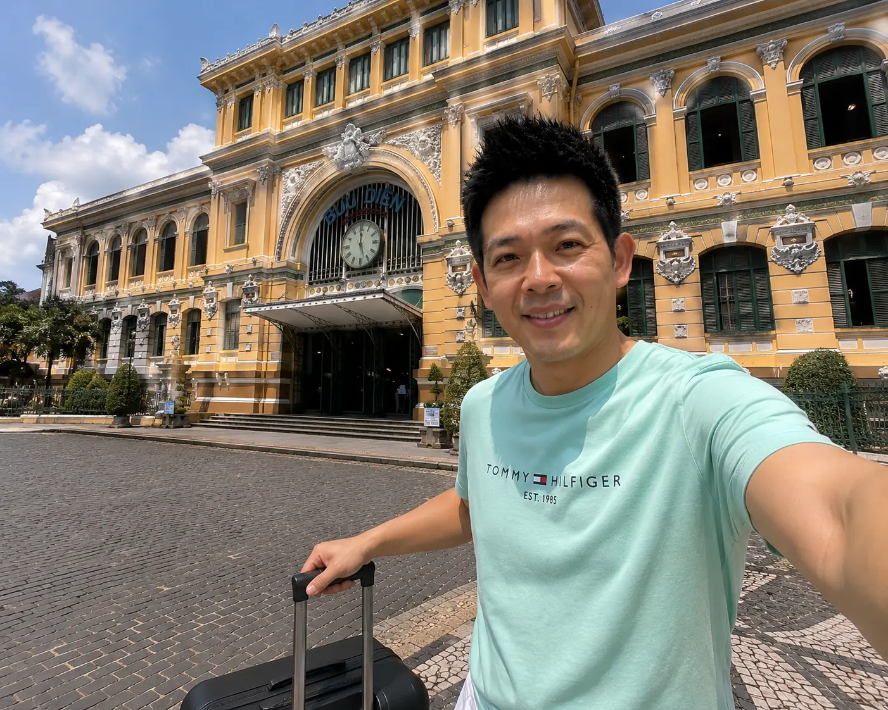

越南中部最具人氣的度假勝地——峴港（Da Nang），近年來已成為海內外旅人的熱門首選！這裡擁有被福布斯選為「全球最美六大沙灘」之一的美溪沙灘、氣勢磅礴的巴拿山佛手黃金巨橋、法式古典歐風城堡，以及擁有千年歷史底蘊的世界文化遺產——會安黃金古鎮。
最難能可貴的是，峴港將海濱海景度假的奢華感與東南亞極致親民的旅行預算完美融合。一晚千元出頭，就能住進臨海第一排的無邊際高空泳池酒店；幾十元台幣，即可在街邊享用大碗鮮美的廣南黃麵與特製越式滴漏咖啡。這篇 2026 最新實測的 3 天 2 夜極致度假路線與費用預算，帶你無雷暢遊峴港！
✈️ 峴港機票 × 精選海景飯店
均在路上專屬預訂通道：早鳥折扣與限時特惠預訂
限時預訂越南中部航班與熱門美溪沙灘度假酒店享讀者特惠價
🏛️ 越南峴港自由行：實用行前基本資訊
🛂 簽證說明：
台灣護照可享落地簽（費用約US$25），或提前在越南官方電子簽證平台（E-Visa）線上申請，一般3個工作天發證，快速省事。
🕒 國家時差：
比台灣/香港慢 1 小時（GMT+7），直飛飛行時間僅約 2.5 小時，是週末說走就走、舒適度假的極佳選擇。
💵 匯率與消費：
1 台幣 ≈ 580 - 600 越南盾（VND）。物價非常低廉，一份精緻在地廣南黃麵或越式河粉僅約台幣 50-80 元，海鮮也極高CP值。
☀️ 最佳旅遊季節：
2月至5月最推薦（涼爽乾燥季）；6月至8月日照充足非常適合海上衝浪活動；9月至12月則進入中部雨季，出遊需備雨具。
📅 峴港 3 天 2 夜極致度假經典日程
DAY 1 雲端城堡巴拿山 + 世紀佛手黃金橋 + 越式海鮮大餐
08:30
搭車前往巴拿山 (Ba Na Hills)
從市區搭乘 Grab 叫車，大約 40-50 分鐘車程即可抵達巴拿山景區入口。
09:30
乘坐世界最長單線纜車
體驗長達 5,801 公尺、世界紀錄最長的單軌高空高落差纜車（大約25分鐘），一路上穿過茂密的熱帶原始林海與溪流雲霧。
10:30
漫步佛手黃金橋 (Golden Bridge)
欣賞兩隻彷彿被青苔石化、從懸崖中伸出的巨手穩穩托起的金黃色天橋。漫步於雲霧縹緲的橋面上，俯瞰驚心動魄的無邊山景。

▲ 矗立於雲海間的巨大雙手托橋，是巴拿山最震撼的世紀地標
12:30
漫遊法國山城古堡與 Fantasy Park 室內遊樂園
在海拔1500公尺的山頂探訪法式印度支那風情的老宅、酒莊與哥德式大教堂，一日套票包含來回纜車（₫750,000），極度超值。
18:00
晚餐：美溪海灘旁現撈海鮮大排檔
回到峴港市區。在海濱大道自選現點海鮮（如生蠔、香烤龍蝦、炒貝類等），大火清炒，香濃爽口，價格約台灣五折！
💡 實測早鳥 Tip：巴拿山山頂海拔高，氣溫常比平地低 5-8 度，且極易突然起霧或下起山區小雨，強烈建議隨身攜帶一件防風薄外套與一把輕便摺疊傘。
DAY 2 最美白沙灘日出 + 大理石五行山 + 漢江龍橋噴火秀
05:15
美溪沙灘 (My Khe Beach) 迎曙光
清晨至美溪沙灘，看著朝陽將30公里長的白色海灘染上夢幻般耀眼的橙紅色，在寧靜的海風中擁抱新的一天。
09:00
山茶半島 (Son Tra) 俯瞰峴港灣
租摩托車騎行上山，拜訪矗立於半島高處、高達 67 公尺的漢白玉觀音雕像，居高臨下觀賞海天一色。
14:00
探索大理石五行山 (Marble Mountains)
造訪大理石山體中鬼斧神工的神秘山洞，裡面藏有多個古老的佛龕與石刻佛像，並可登頂鳥瞰峴港平原美景（門票 ₫150,000）。
18:30
晚餐：享用當地廣南黃麵 Mi Quang
享用濃稠高湯熬製、撒上酥脆花生碎與蝦肉的廣南黃麵，配以香脆米紙、豐富鮮香草，滋味非凡。
20:30
漢江龍橋週末表演 (Dragon Bridge)
如果是週末（六、日）21:00，巨龍造型的大橋龍頭會準時開始震撼的火焰與水柱噴射秀，漢江兩岸熱鬧非凡！
DAY 3 粉紅大教堂 + 穿梭會安黃金古鎮 + 許願水燈浪漫夜
09:00
峴港粉紅大教堂 (Pink Cathedral)
參觀法國殖民時期建立的糖果粉色哥德式老教堂，外觀甜美，是網美極其熱門的經典打卡點。
14:00
出發會安古城 (Hoi An) 深度散步
大約 40 分鐘車程。走進這座融合了中國、日本、法國與越式風采的黃色外觀老街，參觀日本廊橋、福建會館，感受時光倒流。
16:30
品嚐會安特色高樓麵 (Cao Lau)
品嚐只有在會安才能吃到的高樓麵，這種麵條咬勁十足，配上香脆豬皮、燒肉、香草和鮮甜醬汁，極度滿足。
18:30
乘手划木船、放許願水燈
夜幕降臨，會安古城點亮萬盞彩色絲綢燈籠。租一艘小木船，在波光粼粼的秋盆河上親手放下一盞許願水燈，浪漫達到頂點。
🗺️ 峴港 3天2夜 度假地圖與互動標記
我們為您實景繪製了峴港自由行 4 大地標的精準分佈圖。點選下方的紅色地圖互動標記（Pins）或左側選單，即可即時查看該景點的實測點評與自由行避坑指南：
CURRENT SELECTION
🏖️ 美溪沙灘 (My Khe Beach)
★★★★★
5.0 (520+ 實測評分)
被譽為全球最美六大沙灘之一，拥有30公里長的白細沙灘。沙質極軟，下水衝浪、晨跑或漫步看夕陽簡直是一大奢華享受，且完全免費！
East Vietnam Sea
📍 峴港市區度假定位點
2026 MAP V1
🗺️ 點擊地標圓圈切換選取狀態
🏖️ 越南峴港四大熱門景點深度剖析
峴港這座城市非常奇妙，它集聚了高山避暑、白細沙灘、世界文化遺產、以及在地美味於一身，以下是實地旅遊反饋最棒的四大必玩景點：
★ 全球最美六大沙灘 01
🏖️ 美溪沙灘 (My Khe Beach)
被選為全球最美六大沙灘之一，白沙連綿數十公里。這裡不僅沙質細滑如粉末，且海灘極其寬闊、乾淨衛生。無論是清晨前往漫步追日出，還是午後躺在太陽傘底下點一杯鮮椰子汁，都是峴港度假的靈魂所在。
★ 漢白玉巨型觀音像 02
⛰️ 山茶半島 (Son Tra Peninsula)
這裡是峴港的制高點，山腰處矗立著高達 67 公尺的白玉靈應寺大觀音像。騎摩托車沿著乾淨的海濱公路蜿蜒向上，不僅能俯瞰整個呈月牙狀的峴港灣與蔚藍海岸，還能常常遇見林間覓食的野生小猴子。
★ 千年黃金絲綢古鎮 03
🏮 會安古鎮 (Hoi An Ancient Town)
聯合國教科文組織世界文化遺產。這座古老的通商口岸至今完好保留了法式明黃色老洋房、日式木廊橋與中式宗族會館。到了夜晚，滿街亮起五彩繽紛的手工絲綢燈籠，乘舟放水燈的畫面美得如同夢境。
★ 廣南黃麵與炭烤海鮮 04
🍲 廣南特色美食 (Local Cuisines)
除了傳統牛肉粉，峴港在地特產「廣南黃麵 (Mi Quang)」絕對要吃！它的麵身呈亮黃色，咬勁十足，澆上少許由肉碎、花生碎與香草調和的濃汁，吃一口香氣充盈。此外，漢江龍橋旁的炭烤大蝦也極致鮮嫩。
🛵 峴港在地交通生存指南
🚕 叫車還是租車？峴港自由行交通解析
峴港是全越南道路最寬敞整潔、機車流速相對溫和的城市，但依然有其特點。小資旅人可依據自身情況靈活選擇：
📱 全程善用 Grab / Bolt
在越南叫計程車最忌諱隨手在路邊攔空車。使用 Grab 叫車，費用全程透明，市區內行車僅需台幣幾十至上百元，安全無欺詐。
🛵 摩托車一日自由行
向飯店直接租借摩托車，一天費用約 120,000 - 150,000 VND（折合台幣僅 NT$150），加油大約30元台幣即可，是探索山茶半島的絕佳方式。
🏨 美溪沙灘海景飯店推薦
下榻飯店強烈首選「美溪沙灘第一排」。步行 1 分鐘到海灘，且頂樓多附有驚艷的高空海景無邊際泳池，一晚僅需台幣一千元左右！
💰 峴港 3 天 2 夜真實花費預算大對決
我們為不同出遊風格的旅人整理了最新實測花費對比，讓您對開銷一目了然：
| 消費項目（人均計） | 背包客小資型 (TWD) | 精緻舒適型 (TWD) |
|---|---|---|
| 來回機票 (廉航 vs 傳統早鳥) | NT$ 5,000 - 8,000 | NT$ 9,500 - 14,000 |
| 精選海景住宿 (2晚) | NT$ 1,000 - 1,800 | NT$ 3,000 - 6,000 |
| 餐食消費 (海鮮、廣南黃麵、咖啡) | NT$ 800 - 1,500 | NT$ 2,500 - 4,500 |
| 交通（Grab/租摩托車/會安包車） | NT$ 400 - 800 | NT$ 1,500 - 3,000 |
| 景點門票 (巴拿山纜車＋五行山) | NT$ 1,300 - 1,500 | NT$ 2,000 - 3,500 |
| 不含機票總花費估計 | NT$ 3,500 - 5,600 起 | NT$ 9,000 - 17,000 起 |
🏨 峴港精品海景飯店：讀者專屬訂房優惠
🏨
均在路上 推薦美溪海灘精選飯店 (Trip.com)
★★★★★ 讀者實測住過強烈推薦
在峴港，用極低代價就能享受極高水準的高空海景無邊際泳池生活。頂樓一邊游著水，一邊看著無邊無際的深藍色海岸線。目前透過 Trip.com 專屬連結預訂，可以享受到讀者專屬的限時優惠與早鳥超低房價。
❓ 越南峴港自由行：常見問題 FAQ
我們彙整了多位讀者實地旅行反饋、最常遇到的 4 大高頻實用疑問解答：
標準套票為 ₫750,000 越南盾（折合台幣約 1,100 - 1,200 元），門票包含了來回的高空纜車以及山頂 Fantasy Park 室內遊樂園內的大多數遊樂設施，性價比高。建議提前線上（如 Klook 或 Trip.com）訂好，免去現場排長龍購票的麻煩。
如果時間有限，3 天 2 夜是最精華的黃金行程（第一天玩巴拿山，第二天玩美溪沙灘、五行山、漢江龍橋，第三天深度遊玩會安古鎮）。如果您想慢下來，安排 4 天 3 夜或者 5 天 4 夜，在美溪沙灘享受慵懶的度假酒店生活，將會更完美。
會安古鎮景點套票為 ₫120,000。此票可用於參觀古鎮內多個被保護的傳統宅院、日本廊橋與博物館。如果您僅在傍晚 19:00 後進入散步、去夜市吃飯，一般古鎮入口是不會強制每個人都買票的。
峴港被公認為是越南最宜居、治安最好、民風最純樸的城市，鮮少有飛車奪包的現象，治安完勝胡志明與河內。這裡極度適合女生單獨一人前往旅行或享受悠閒的度假生活。
👇 更多讀者狂推的熱門自由行攻略：
📂 讀者獨家限定福利
2026 東南亞避坑神書：泰國、新加坡、越南落地防坑防騙自救手冊
收錄泰國 Grab/Bolt 叫車不踩雷指南、新加坡出入境電子申報（SG Arrival Card）步驟詳解、越南換匯防假鈔心法，以及東南亞各國三大電信上網卡實測評估。讓你小資窮遊也能極致安心！
🔒 我們極度重視您的個人隱私，絕不對外發送任何垃圾郵件